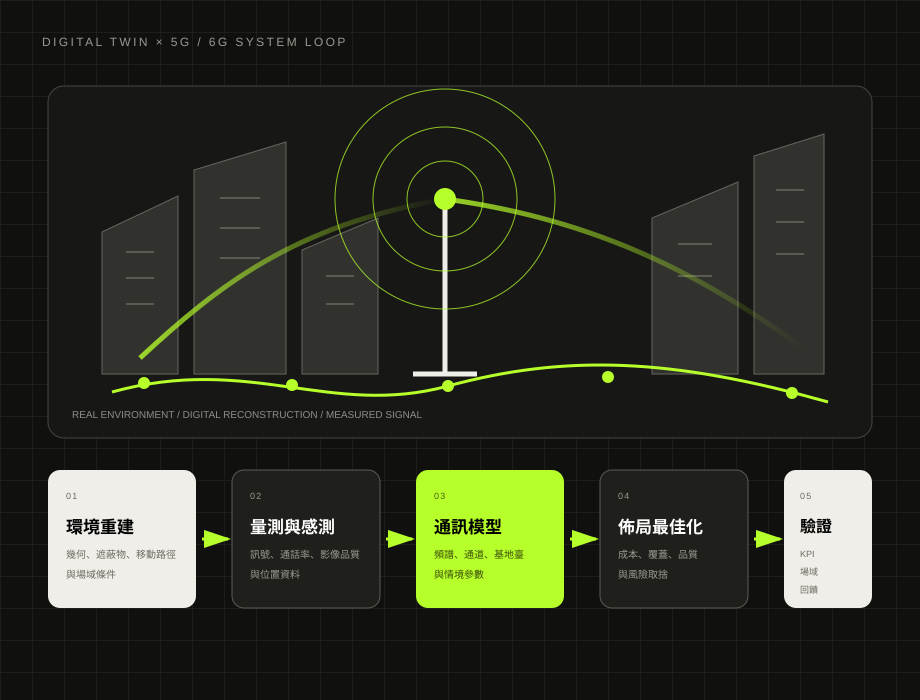
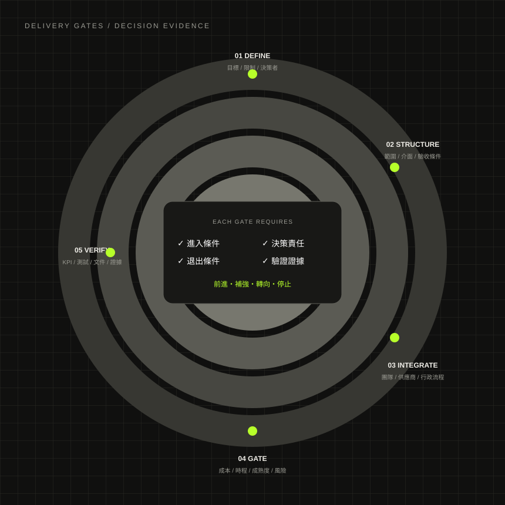

PROJECT / PRODUCT / SYSTEM INTEGRATION
讓複雜專案，
有方法地落地。
我把跨技術、跨單位與跨制度的模糊需求，整理成可以決策、可以執行、也可以被驗收的成果。
15+年跨域專案與整合經驗
6大核心場域與技術脈絡
E2E從需求、規格到驗收交付
 我的工作不是接手單一任務，而是把需求、技術、流程與驗收放進同一張決策圖。
我的工作不是接手單一任務，而是把需求、技術、流程與驗收放進同一張決策圖。
ICTTelecomAISpace SystemsGovernment ProjectsDigital Transformation
01
POSITIONING
真正困難的，不是把任務排進甘特圖。
而是先判斷：什麼值得做、誰必須一起做、做到什麼程度才算完成。
我的角色通常出現在需求尚未完全清楚、技術與行政界面複雜、交付風險高的專案。工作重點是先把問題拆開、把責任界面接起來，再將結果收斂成可交付的規格、文件與證據。
需求轉譯跨域整合風險 Gate利害關係人驗收設計
不只列名稱，而是說清楚問題、角色、工作內容、交付證據與管理價值。
01AI / PRODUCT / HEALTHCARE CONCEPT
TongueCare AI
將舌象影像、AI 輔助觀察、雙語內容與風險提示整合成一套可操作的口腔健康服務原型，而不是只展示模型結果。
- 問題情境
- 使用者不知道如何拍攝可用影像，也難以理解 AI 輸出與健康風險邊界。
- 我的工作
- 定義使用流程、影像輸入規格、結果呈現層級、雙語介面與非醫療診斷邊界。
- 主要產出
- Web App 原型、拍攝引導、觀察結果頁、歷史紀錄與產品流程規格。
- 管理價值
- 把「模型能做什麼」轉成「使用者能正確操作、理解與採取行動的服務」。
產品流程互動原型AI 應用邊界雙語資訊架構
 產品原型與決策流程示意：影像品質檢核 → AI 輔助觀察 → 雙語結果 → 建議與紀錄。
產品原型與決策流程示意：影像品質檢核 → AI 輔助觀察 → 雙語結果 → 建議與紀錄。
 需求追溯與驗證鏈：Requirement → Test Plan → Procedure → Evidence → Failure Record。
需求追溯與驗證鏈：Requirement → Test Plan → Procedure → Evidence → Failure Record。
02SPACE SYSTEMS / V&V
CubeSat V&V
以模擬環境建立小型衛星飛行軟體的驗證與確認流程，讓需求、測試步驟、結果與失效處理可被追溯。
- 問題情境
- 飛行軟體、姿態控制與任務操作跨越多個系統，若缺少共同測試基準，整合問題容易延後才被發現。
- 我的工作
- 以 NOS3、Yamcs 與 ADCS mode switch 情境建立驗證邏輯，串接需求、操作程序與觀測證據。
- 主要產出
- Test Plan、Test Procedure、Test Report、Failure Report 與可重現的操作步驟。
- 管理價值
- 將「測過」提升為「可重現、可追溯、可判斷是否達成驗收條件」。
NOS3YamcsADCSV&V Traceability
03DATA / TELECOM / ANALYTICS
Telco Churn
把客戶流失資料從清理、建模與特徵解釋，轉成營運團隊能理解的高風險客群與優先行動。
- 問題情境
- 模型分數本身無法回答「哪些客戶應先處理、為什麼、可採取什麼行動」。
- 我的工作
- 使用 Python 完成資料品質檢查、特徵工程、模型比較與高風險客群剖析。
- 主要產出
- 分析報告、模型比較、特徵重要性、風險分群與營運建議。
- 管理價值
- 將技術輸出轉成可排優先序的留存策略，而不是停在準確率。
PythonRandom ForestFeature ImportanceRisk Segmentation
 分析結構示意：資料品質 → 模型比較 → 關鍵因子 → 高風險客群 → 留存行動。
分析結構示意：資料品質 → 模型比較 → 關鍵因子 → 高風險客群 → 留存行動。

研究架構示意：環境重建、量測、通訊模型、基地臺佈局與服務品質形成閉環。
04DIGITAL TWIN / 5G・6G / R&D
Digital Twin × 5G / 6G
以數位孿生整合環境重建、感測與通訊條件，將基地臺佈局、通話率、影像品質與頻譜配置拆成可測試的工程問題。
- 問題情境
- 場域、遮蔽物、移動路徑與通訊資源互相影響，單一模擬或單次量測無法支援長期最佳化。
- 我的工作
- 定義研究邊界、資料來源、系統介面、情境變數與可驗證指標，形成可持續迭代的研究架構。
- 主要產出
- 系統架構、場域模型、量測／模擬流程、KPI 與研究驗證路徑。
- 延伸方向
- 多衛星連線、基地臺端環境重建，以及頻譜／通道動態分配。
Digital Twin5G / 6GSystem ArchitectureResearch Validation
05GIS / LIDAR / AUTONOMOUS MOBILITY
高精圖資與自駕載具整合
串接 GIS、LiDAR、高精圖資、車端系統與場域驗收，處理「資料規格正確，但車輛仍無法穩定使用」的跨介面問題。
- 問題情境
- 圖資製程、定位資料、車端接口與場域條件分屬不同團隊，缺乏一致規格時容易互相歸因。
- 我的工作
- 釐清場域需求、資料格式、更新流程、車端接口與測試情境，建立跨單位問題追蹤與驗收框架。
- 主要產出
- 資料規格、介面清單、場域測試項目、問題閉環與交付驗收條件。
- 管理價值
- 把「圖資、感測、車控各自完成」整合成「載具能在目標場域穩定運作」。
GISLiDARHD MapVehicle Integration
 跨介面示意：場域量測 → 點雲／圖資 → 車端定位 → 路徑執行 → 場域驗收。
跨介面示意：場域量測 → 點雲／圖資 → 車端定位 → 路徑執行 → 場域驗收。
 專案治理示意：政策目標、產業需求、技術內容、行政採購與成果驗收必須同步。
專案治理示意：政策目標、產業需求、技術內容、行政採購與成果驗收必須同步。
06GOVERNMENT / INDUSTRY PROGRAMS
太空產業人才與產學協作
整合政府、研究、產業、講師與執行單位，把政策目標轉成可執行的培訓、交流與成果交付。
- 代表工作
- 111／112 太空產業高階領袖營、2022 人才培育成果交流會、2023 太空產業在職人才技術工作坊。
- 我的工作
- 需求釐清、主題設計、合作方協調、議程與資源整合、執行控管及成果彙整。
- 主要產出
- 企劃、工作分解、里程碑、風險清單、活動／課程執行與驗收資料。
- 管理價值
- 降低「政策語言、技術語言與執行語言」之間的落差，確保計畫能落地並被驗收。
Stakeholder ManagementProgram DesignGovernment DeliveryAcceptance
15+年專案管理、產品與系統整合經驗
2008起投入跨域專案與交付工作
多場企業與專業授課持續獲得高評價
端到端需求、規格、執行、驗收到交付
方法不是套模板，而是提早暴露風險，讓決策者知道何時前進、何時調整、何時停止。
- 01
Define
辨識真正目標、限制、決策者、影響者、執行者與不可失敗條件。
- 02
Structure
把模糊需求轉成範圍、介面、優先序、資源與驗收標準。
- 03
Integrate
拆解跨團隊、跨技術、供應商與行政流程的依賴關係。
- 04
Gate
用成熟度、成本、時程與風險決定前進、補強、轉向或停止。
- 05
Verify
用 KPI、測試、文件與交付證據確認成果，而不是以感受結案。

每一個 Gate 都有進入條件、退出條件與可驗證證據。
PROFILE
跨域不是標籤，
而是處理界面的能力。
歷經 GIS、智慧交通、高精圖資與 LiDAR、自駕載具、AMR／ROS、AI 視覺、智慧農業、低軌衛星、電信數位轉型與生成式 AI 等場域，核心能力始終一致：理解不同專業如何互相牽動，並建立能讓團隊共同工作的規格與決策框架。
GISLiDARAutonomous MobilityAMR / ROSAI VisionSmart AgricultureLEO / SpaceTelecomGenerative AIGovernment Projects
01需求與規格
把模糊需求轉成清楚的範圍、介面、優先順序與驗收條件。
02產品與系統
同時理解使用情境、商業價值、技術依賴與系統生命週期。
03專案治理
建立里程碑、風險、責任矩陣、Gate 與決策紀錄，維持專案可控。
04交付與驗收
以測試、文件、KPI 與證據完成交付，避免最後階段才發現落差。
EDUCATION & RESEARCH
工程、統計、管理與 AI，
構成跨域決策底座。
學術背景不是平行堆疊，而是用來處理不同類型的決策：工程負責系統、統計負責證據、管理負責資源與組織、AI 負責新型工具與產品可能性。
ENGINEERING太空系統工程系統工程、V&V、任務與軟硬體整合。
STATISTICS國立臺北大學統計學研究與房價／房貸期數之實證分析。
MANAGEMENT應用經濟與管理決策、品質機能展開與關鍵成功因素。
AIAI 創新應用資料分析、模型應用與生成式 AI 工作流程。
現在
ENGINEERING
國立臺北科技大學｜太空系統工程研究所
聚焦 CubeSat、飛行軟體模擬、驗證與確認、地面站與系統整合。
統計
STATISTICS / ECONOMETRICS
國立臺北大學｜統計學系
碩士論文研究：〈探討房貸期數對房價之影響〉。建立量化分析、模型判讀與證據導向決策能力。
碩士
MANAGEMENT
國立宜蘭大學｜應用經濟與管理學系
碩士論文：〈以品質機能展開探討植物工廠之關鍵成功因素〉，國家圖書館收錄。
2026
ARTIFICIAL INTELLIGENCE
輔仁大學｜學士後 AI 創新應用多元培力專班
完成 AI、資料分析與創新應用之跨域培訓。
學士
LIFE SCIENCE
中國文化大學｜園藝學系
農學學士。早期建立生物、農業與系統觀察的基礎。
SELECTED CREDENTIALS
持續更新的方法與工具。
精選與目前職涯定位最相關的專業訓練，不以證書數量取代實際能力。
GoogleProject Management
專案規劃、執行、敏捷方法與利害關係人管理。
GoogleData Analytics
資料清理、分析、視覺化與決策溝通。
GoogleGenerative AI Leader
生成式 AI 導入、策略與企業應用。
AWSGenerative AI
Technical 與 Business Skill，涵蓋技術概念與商業場景。
AnthropicAI Fluency & Agent Skills
AI 協作框架、Agent skills 與 Claude Code 應用。
DNVISO 50001 / 14067 / 14064-1
能源、產品碳足跡與組織溫室氣體內部查證／稽核訓練。
TEACHING & ENABLEMENT
把複雜知識，轉成能立即操作的工作方法。
企業與專業培訓聚焦生成式 AI、資料應用、專案管理與數位工具實作。課程設計以真實痛點為起點，安排工具、材料、Prompt、操作步驟與完成畫面，讓學員能在課堂中產出可用成果。
多場授課持續獲得高評價專業度表達清楚整體體驗
- 01情境與工作痛點定義
- 02工具選擇、Prompt 與操作規格
- 03同步實作、完成畫面與備援材料
- 04KPI、交付物與課後可複用模板
 課程設計不是功能導覽，而是從痛點、資料、Prompt、操作到成果驗收的完整閉環。
課程設計不是功能導覽，而是從痛點、資料、Prompt、操作到成果驗收的完整閉環。